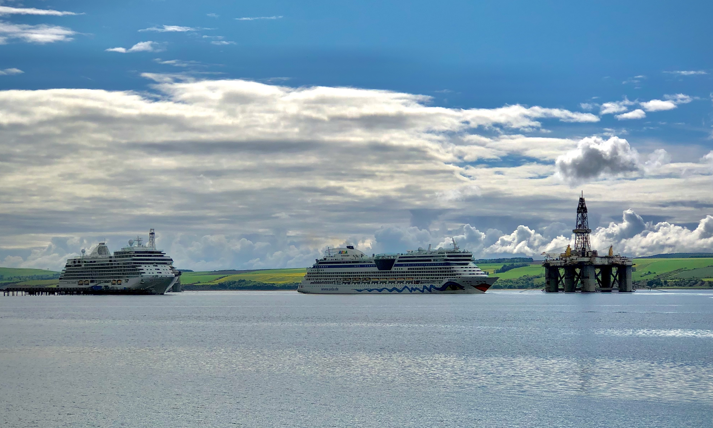

24 April 2026 · Cruise Season
The Renaissance Calls In — First Drone Shots of the Season

Today was one of those days that reminds you exactly why living in Invergordon is something special. The Fred. Olsen Renaissance was in port — and for the first time this season, the weather, the schedule, and a charged drone all lined up at the same moment.
Getting airborne over the Cromarty Firth with a ship of that scale in the frame is a different thing entirely. The contrast between the quiet rooftops of the town, the cherry blossom in full bloom, and the Renaissance sitting at the quayside is the kind of image that tells the whole story of Invergordon without needing a caption.
More shots to follow as the season gets underway. The 2026 cruise schedule brings some big ships to the Firth this year — plenty of opportunities ahead.
April 2026 · Welcome
Welcome to Explore Invergordon

Invergordon sits on the shore of the Cromarty Firth in the Scottish Highlands — one of the deepest natural harbours in Europe, and for a few months every year, one of the busiest cruise ports in Scotland.
This blog is written by a local. The aim is simple: to share what makes this town worth exploring, beyond the obvious. The Mural Trail, the distilleries, the history, the food, the people. The things that don't make it onto the generic tourist leaflets.
If you've arrived by ship and you're wondering what to do with your day ashore — start here. If you're planning a visit by road — also start here. And if you already know Invergordon and want to keep up with what's happening in and around the town, this is the place to check back.
More posts coming regularly throughout the season.